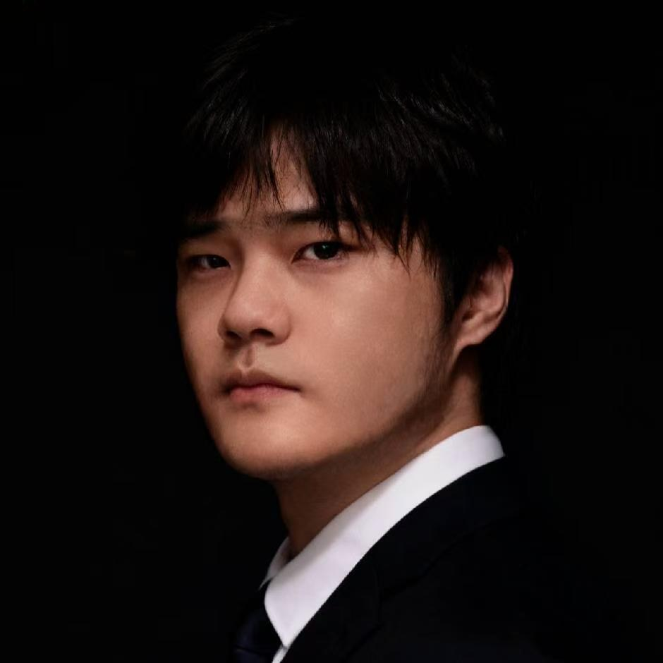
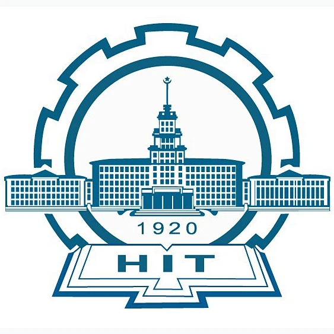

About
I'm Brandon, 冰燃 (Bīng Rán), which in Chinese roughly means "burning ice." I build and ship large language models at Z.ai, where I was the company's first AI engineer in the Asia-Pacific region. The work has taken me through edge-cloud architectures, real-time multimodal systems, multi-agent design, and sovereign-model programs for governments — and through the unglamorous middle of actually getting them to run.
The past couple of years have been wild, moving faster than I could have imagined, both for me personally and for the AI field as a whole. On my end, I put real-time multimodal conversation onto the first phone to ever carry it, built sovereign models that belong to a country, and somewhere along the way picked up a few best-individual awards, a handshake with a prime minister, travels across many countries, and meetings with people across industries and disciplines, among other things. Before Z.ai I spent a year applying ML algorithms to international markets at a Fortune Global 500 company, work like time-series forecasting and regression factors, the kind of modeling that actually moves a number.
I completed my graduate studies at Tsinghua with a master's in Financial Big Data, after a bachelor's from the Harbin Institute of Technology. I was admitted to the Erasmus Mundus programme, and have been fortunate enough to form close ties with Tohoku, HKUST, UCLA, and the University of Malaya. Away from models I swim, travel solo (many countries and regions, and I'm quite sure that count will keep growing), build games in Unity, and run a little corner of the Chinese internet that has somehow gathered a few thousand followers and nearly a million video views.
Selected Projects
National Sovereignty Infra-LLMs
The project name sounds grand, but it's accurate, believe it or not, and Google will back me up. This was an early chapter in large-model technology making its way across borders, working alongside the local government and enterprises to build a model they could call their own and keep hold of, which is also how it brought me to Kuala Lumpur. I was deeply involved in the key technical parts: the early conversations and technical alignment, model training, deployment, and the API and commercialization path; I pushed our internal end-to-end training pipeline toward standardization; and I led the design and engineering of several application products (agentic chat among them). Barring running the base training itself, I owned most of the engineering and product work. It was a cross-team effort and I was one of the team, but on the part I was responsible for, I was the primary owner. The part I still find slightly surreal: a handshake at the close of the project with that country's most important person.
Samsung S25 On-Device-Cloud AI
The S25 became the world's first phone you could hold a real-time, multimodal conversation with, natively end-to-end rather than the old ASR-LLM-TTS three-stage chain, seeing the world, hearing a person, and answering back in the same breath. I worked on the edge-cloud backbone and the LLM instant-messaging service behind it: the device-side vision-language model and the real-time pipeline powering the next Bixby. In early 2024, matching Gemini Live was genuinely hard, but we got there: model capability across several domains, very low latency, emotion, context, and tool use. The same approach was later used on a few other devices, an in-car system, and a couple of handset brands.
Knowledge Graph-based Education LLM
You may have heard of a project that was everywhere for a moment and then quietly faded from the RAG-era hype: GraphRAG. I was, for a while, genuinely obsessed with it. What hooked me was how concretely it fused graph knowledge, human experience, and explainability into one thing you could actually point at. This project is where that obsession landed. An education LLM grounded in a knowledge graph, with real-time multimodal conversation layered on top. The idea was to turn a sprawl of heterogeneous teaching material into structured semantic relationships, then let an early multi-agent setup reason over them, asking, retrieving, cross-checking, and answering. This was also where I first started digging into three problems that still drive my work: hallucination, agentic orchestration, and long-horizon tasks, i.e. getting a model to hold a goal across dozens of steps without drifting. What made it hard wasn't accuracy or explainability in isolation; it was doing both at once.
AI Empowerment for CRM System
My friends say I have a habit of showing up at interesting moments: I happened to be at this Fortune Global 500 company right as it went public. The reorg that came with the IPO is what actually rerouted me, from machine learning into NLP, and from there into large models (which were, at the time, still pretty dumb; I hope AGI doesn't hold that line against me). Day to day I built the CRM's brain: intelligent marketing, lead generation, data structuring, smart funnels, a logistic-regression scoring model and a lead-lifecycle tool, plus marketing-data cleansing and classification done with LLMs, all wired into the ODS / CDM / ADS data warehouse as a closed loop. I also got in early on the group's first LLM-based chat product, its design, tech selection, fine-tuning, and private deployment, and ended up establishing the group's internal large model brand.
Research Interests
- How agents hold long conversations and still call the right tool when it matters
- LLMs fused with graph retrieval and classical ML — the combination, not the either/or
- Multimodal models in real-time conversation, and multi-agent systems that have to agree
- Keeping models safe without making them useless
- Getting LLMs to work in languages with a fraction of English's data
Publications
Experience & Education

Harbin Institute of Technology